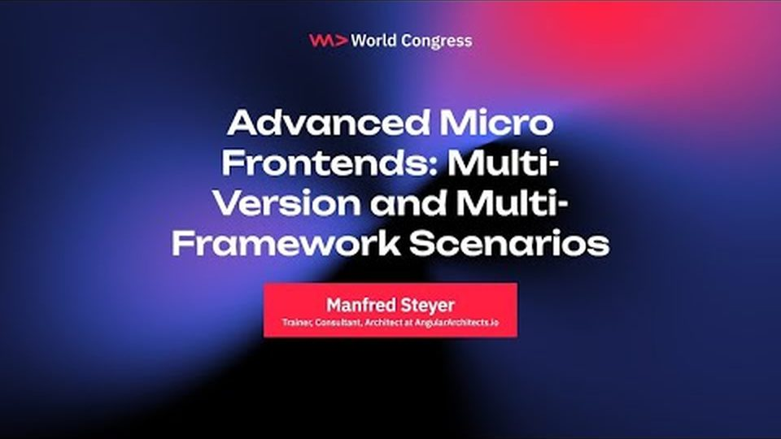
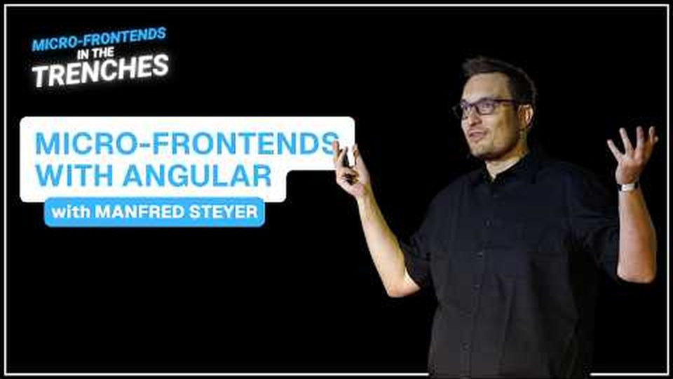
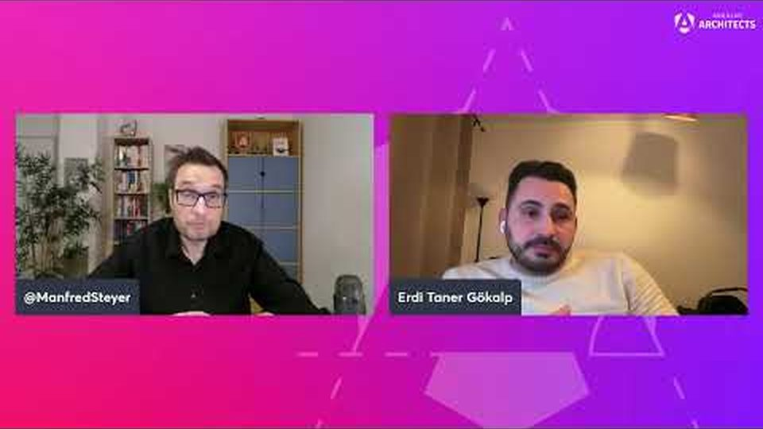
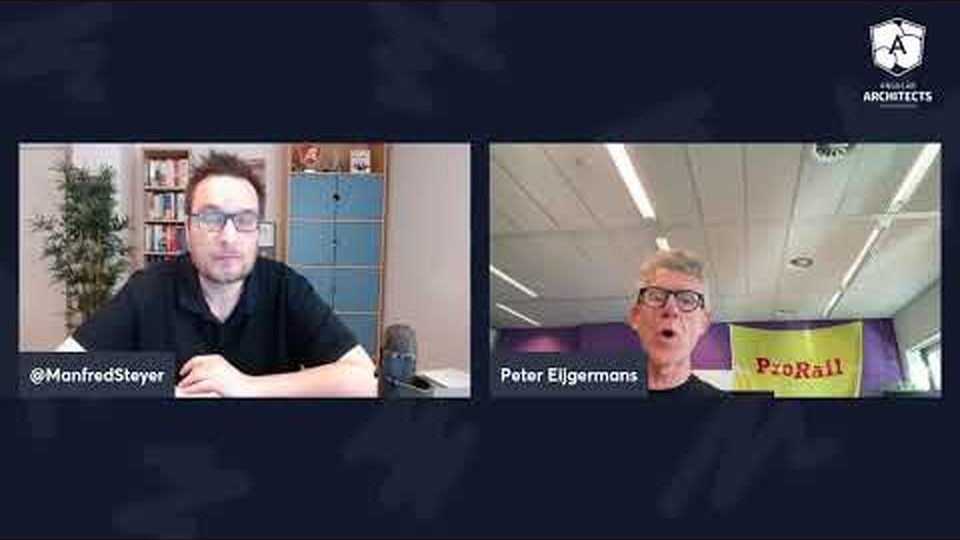
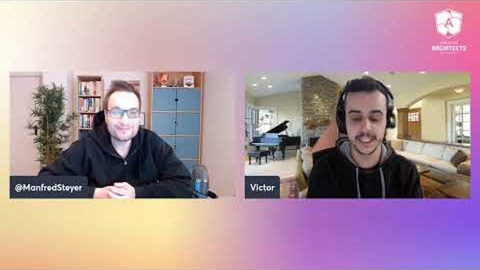
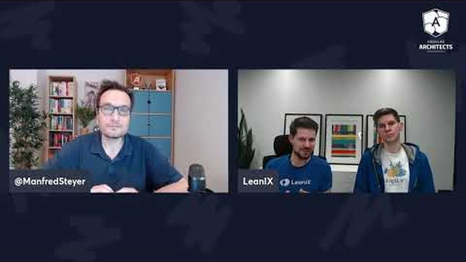
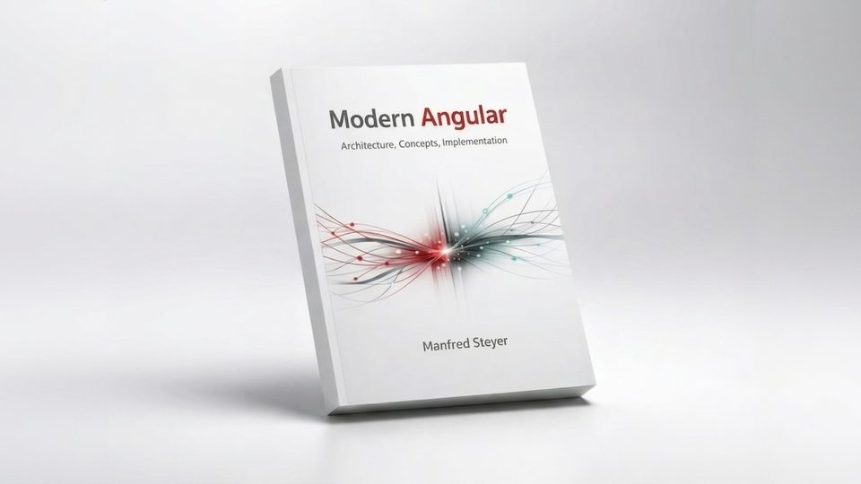

Conference talks, blog posts, and real-world case studies to deepen your understanding of Native Federation.

An introduction to Native Federation with a deep dive into advanced scenarios including multi-version and multi-framework setups.
Watch on YouTube
An in-depth interview with Native Federation founder Manfred Steyer about the project's origins, architecture decisions, and roadmap.
Watch on YouTubeWhen does federation make sense? How to use it? What are the alternatives? A comprehensive look at scalable Angular architectures.
Watch on YouTubeA step-by-step guide to building your first Micro Frontend with Native Federation, standalone components, and esbuild.
Read articleHow to handle multi-version and multi-framework scenarios using Angular Elements and Web Components with Native Federation.
Read articleLearn how to use both Native Federation and webpack Module Federation side-by-side in a single architecture.
Read articleShows how the browser-standard-based and tooling-agnostic ideas behind Native Federation translate into better performance, smoother DX, and a simpler developer workflow.
Read articleExplains the core ideas behind Native Federation: a tooling-agnostic approach built on browser standards like ECMAScript modules and Import Maps.
Read articleOur article in the official Angular blog discusses Micro Frontends, their trade-offs, and how Native Federation supports a standards-based implementation.
Read articleLearn how organizations across industries use Micro Frontends and Native Federation to scale their teams and applications.

How 15 autonomous teams worked together to build a large-scale compliance solution using Micro Frontend architecture.
Watch case study
How Dutch Railways (NS) implements Micro Frontends to manage their large-scale passenger-facing applications.
Watch case studyA look at how a major bank coordinates 240 teams using Micro Frontends to deliver a unified banking experience.
Watch case study
BMW's approach to building and scaling their frontend architecture with Micro Frontends.
Watch case study
Practical lessons and patterns from real-world Micro Frontend implementations across various industries.
Watch case studyAn expert panel discussion on the state of Micro Frontends, common challenges, and proven solutions.
Watch interviewIn-depth books by Manfred Steyer covering Angular architecture, Micro Frontends, and scalable enterprise applications.

Build scalable Angular applications using proven architecture patterns. Based on experience from 1,200+ workshops with enterprise teams. Covers Signals, NgRx Signal Store, modern testing, and more.
Get the bookLearn to plan large-scale applications and implement them as long-term maintainable moduliths or Micro Frontends. Covers strategic DDD, monorepos, Module Federation, Native Federation, and NgRx Signal Store.
Download free eBook